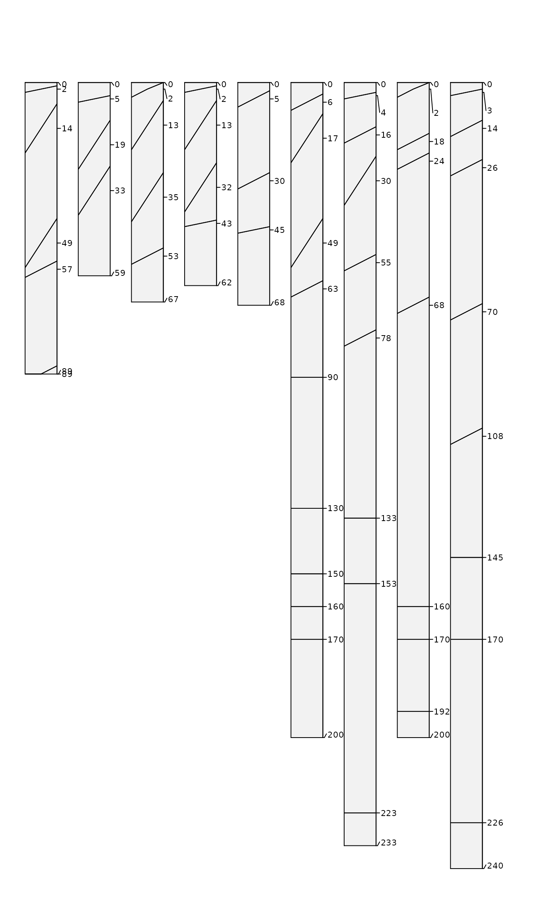

R/hzBoundary.R
hzDistinctnessCodeToOffset.RdThis function will convert USDA-NCSS horizon boundary distinctness codes into vertical (+/-) offsets in cm, based on the Field Book for Describing and Sampling Soils, version 3.0.
vector of boundary distinctness codes to be converted
character vector of distinctness terms ('clear') or codes ('C'), case insensitive, see details
vertical offset factors (cm), approximating 1/2 of the transitional zone thickness, see details
vector of offsets with same length as x
The default offsets are based on the high-end of ranges presented in "transitional zone thickness criteria" from the Field Book version 3.0 (page 2-6). Offsets are returned as 1/2 of the transitional zone thickness so that horizon boundaries can be adjusted up/down from horizon depths. See plotSPC, specifically the hz.distinctness.offset argument for visualization ideas. Missing data in x (NA) or codes that are not defined in codes are returned as 0 offsets.
Either format (or mixture) are accepted, case insensitive:
terms: c('very abrupt', 'abrupt', 'clear', 'gradual', 'diffuse')
coded values: c('v', 'a', 'c', 'g', d')
Additional examples are available in the Visualization of Horizon Boundaries tutorial.
# example data
data(sp1)
# compute 1/2 transitional zone thickness from distinctness codes
sp1$hzdo <- hzDistinctnessCodeToOffset(sp1$bound_distinct)
# convert colors from Munsell to hex-encoded RGB
sp1$soil_color <- with(sp1, munsell2rgb(hue, value, chroma))
# promote to SoilProfileCollection
depths(sp1) <- id ~ top + bottom
hzdesgnname(sp1) <- 'name'
# adjust margins
op <- par(mar=c(0,0,0,1.5))
# sketches, adjust width, adjust text size, include coded hz distinctness offsets
plotSPC(sp1, width=0.3, cex.names=0.75, hz.distinctness.offset = 'hzdo')

# clean-up
par(op)